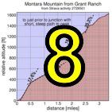

|
 |
 |
| Results are closed! |
| results? | right here! |
| profile |  |
| distance | 3.32 miles (5.3 km) |
| climbing | 1846 ft (562 meters) |
| grade | 10.59% |
| where? | see below |
| when? | 16 Nov 2013 |
| what time | registration none to 10:00 climb starts @ any time Saturday |
| Result | Results are closed |
| waiver | no waiver for self-rides |
| how? |  |
| how much? | $10 (free for juniors and those with volunteer credit) |
| why? | Ask not why; just do! |
| coordinator |  |
| volunteers | sign up! |
| aerial view | Will Van Kaenel, Google Earth |
| weather | Weather Underground |
| links | Strava route |
| deja-vu? | New! |
Sorry, folks! Our insurance requires all riders wear helmets during the climb, and we follow the USA Cycling rule against ear buds or other head phones. Rock to tunes before the climb, perhaps, but we need riders to pay attention to what's happening during the climb...
The Berkeley Hills Double is not part of the main Low-Key series and doesn't contribute to any of the scoring. Rather it's a fun bonus for those who want to challenge themselves above and beyond: combining the steepest long climb in the Berkeley Hills, Lomas Cantadas out of Orinda, with the one of the steepest urban climbs for its altitude gained, Marin Ave out of Berkeley.
The start is in Orinda, where there's plenty of parking on a Saturday. But BART is a better option, with both the start and finish today near BART stations. From Orinda BART, find your way to Camino Pablo, then take that to El Toyonal, optionally with a pre-ride stop in Orinda where there's stores, Starbucks, etc.
The natural option is to climb Lomas Cantadas with the Low-Key climb. But that's not necessary. All that is necessary is to do the climbs on Saturday, 16 Nov 2013, in order with no more than 6 hours between reaching the top of Lomas Cantadas and beginning the climb of Marin Ave. That's plenty of time to do what you need to do between the climbs, including the Vollmer Peak out-and-back after Lomas Cantadas, or even ride Lomas early then help Low-Key take results.
A Strava route for this insult to human intelligence is available here. The important part is the route up Lomas Cantadas. The route from the top of Lomas to the beginning of Marin Ave is just suggested: how you get there is up to you. And the route up Marin Ave is obvious: the road was built straight as a laser for a cog railway, in flagrant disregard for convential considerations of road grade.
Lomas is a bit trickier. El Toyonal begins at busy Camino Pablo in Orinda. Soon after there's a hairpin right, Rio Vista to the left. Rio Vista is a convenient place for groups to stage before beginning the timed climb (Streetsview of El Toyonal from Rio Vista). The timing begins on El Toyonal soon after the intersection with Rio Vista. We'll take the next left: Loma Vista (StreetsView). Loma Vista climbs, at times steeply, until it re-intersects El Toyonal. To complete the route, you need to take Loma Vista, not El Toyonal. If you miss the turn, which is hard to do, simply return to start of El Toyonal and start the route again. Your time will reset.
Loma Vista eventually ends as a T-intersection into a curve of El Toyonal. Go left here, careful to watch for traffic.
You'll then climb El Toyonal, steep by normal standards but not compared to other roads on this route, until it peaks out at an intersection with Alta Vista. Don't take Alta Vista, not that it appears at all tempting to do so (StreetsView). Veterans of Nifty Ten Fifty will recognize it as a short-cut, but completion of the route requires staying on El Toyonal here.
A short descent follows. Again, be careful. The main thing on this event is that you finish it: times are secondary. And you don't finish it by crashing into an oncoming car.
After the descent, you take a left onto Vista del Orinda (StreetsView). From here it's the road most traveled, starting with a left onto Las Piedras (StreetsView). Las Piedras leads to Lomas Cantadas, a turn which is obvious (StreetsView). You'll stay on all the way to the top of the steep climbing, where the first climb of the day ends.
Fortunately, we should have chalk markings on the route for the Low-Key Hillclimbs of Lomas Cantadas starting by 9:30 am, so if you're riding on your own, you can follow the chalk marks starting around that time.
Note the split time on this first climb will likely be somewhat shorter than an official Low-Key time. This is because the GPS route starts slightly late and ends slightly early to accomodate potential GPS error.
Marin Ave is the opposite end of the navigational spectrum: from the start at the infamous traffic circle, there is no doubt about what is ahead. You go in a straight line up. Watch the cross-streets: there's frequent car traffic here, but I assure you if you need to pause for a car, you'll savor every second of the rest. The busiest intersection is Euclid, where traffic is still relatively light. Marin Ave gets super-nasty past here. It's then three ever-so-painful blocs to the finish at Grizzly Peak.
There -- you've done it. Now enjoy freshly paved Grizzly Peak Blvd. From here I'd recommend going left to Spruce/Wildcat Canyon. You can then descend Spruce into Berkeley and catch BART, or descend Wildcat Canyon to the right down to Camino Pablo, turn right there, and return to Orinda.
We don't need volunteers as much this week, since it's a self-ride, although we can still use help the day before marking the route. You can volunteer to help using our volunteer form! Thanks!!!
Low-Key is all about a group of friends riding up a hill together. It's like any other informal group ride, except we time you to the top and report the results on our web site. But we have no road closures, no lead vehicle, no follow vehicle. We are traffic, sharing the roads with other traffic, following the laws and courtesy which applies to traffic. Think of it as a human-assisted Strava. We're each responsible for our own actions out there, on and off the bike, both as users of the road as as courteous visitors to the neighborhoods we pass through. "Ceci n'est pas un race".